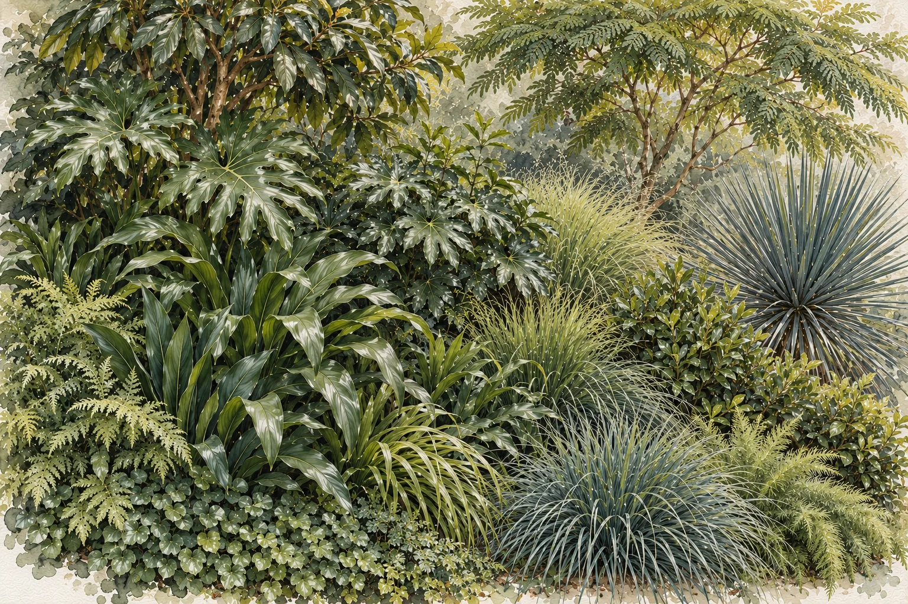
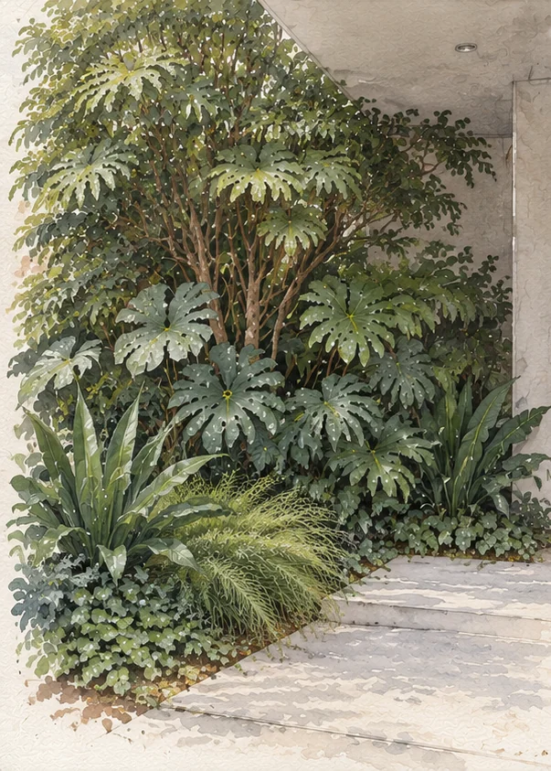
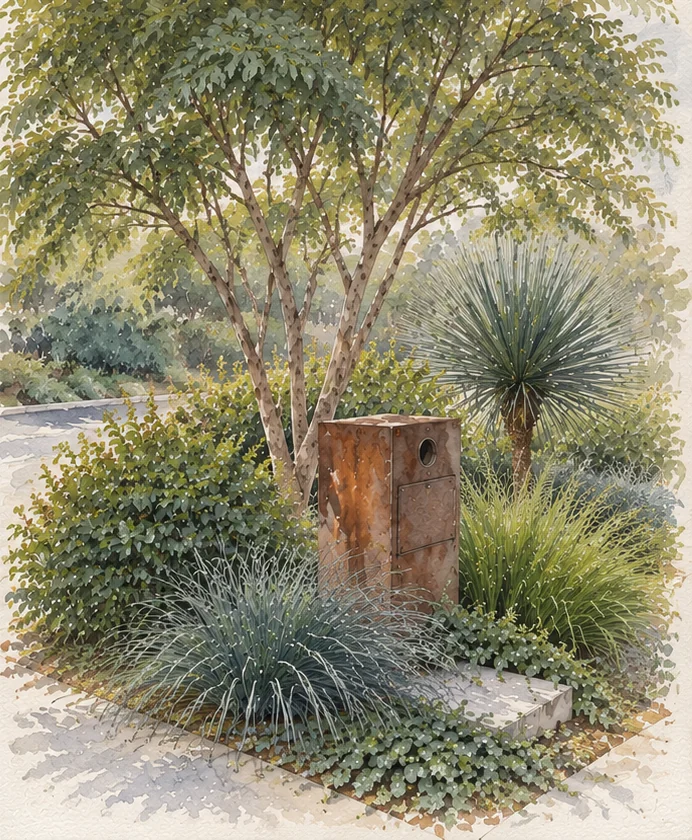
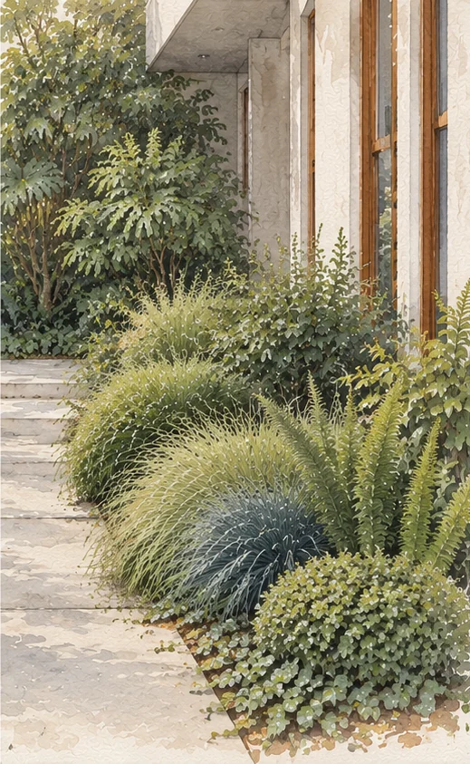
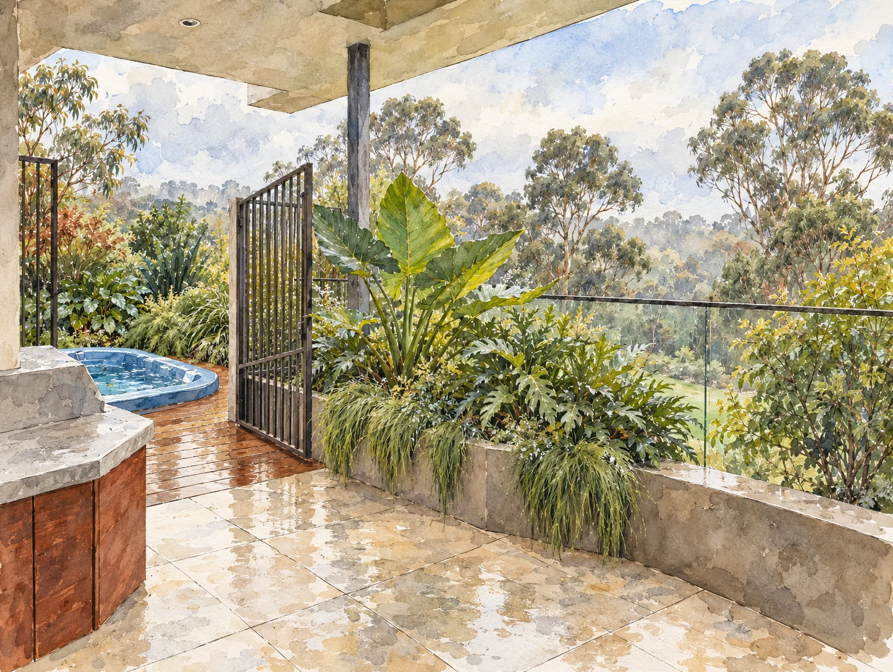
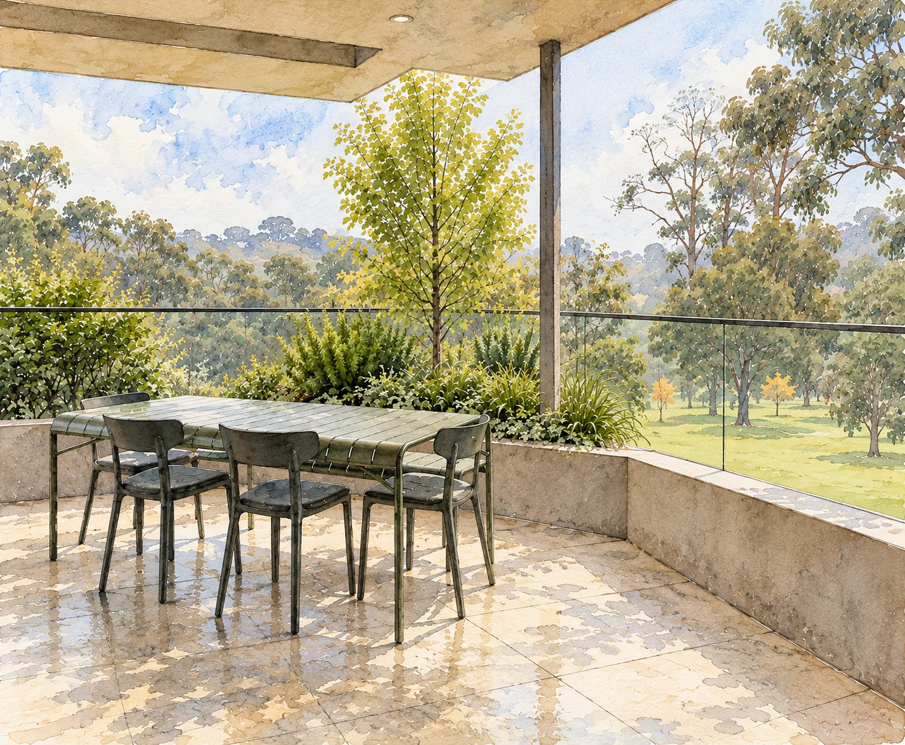
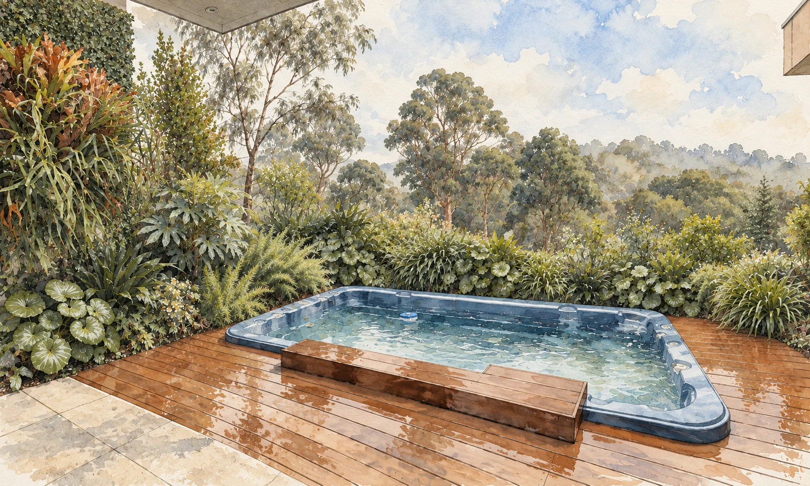
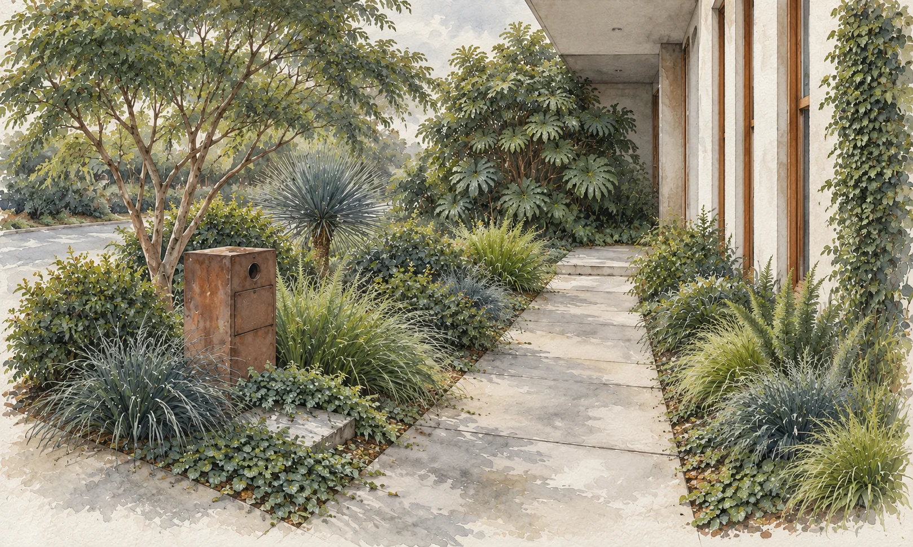
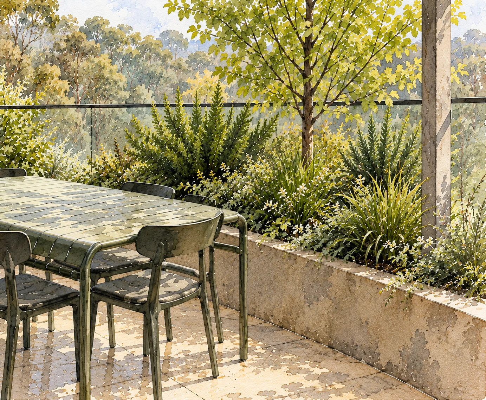

At Gardener & Son, we acknowledge the Wurundjeri Woi Wurrung people of the Kulin Nation, the Traditional Custodians of the land on which we live and work — including this corner of Doncaster, beside Ruffey Lake Park. We honour their enduring connection to Country, and the woodlands and waterways that have been cared for here across generations. Our work seeks to tend that same relationship — weaving living green back into the places we call home.
“Modern and luxurious, and at the same time connected to Ruffey Lake Park. Mostly green foliage, repeated in mass plantings, contrasting leaf sizes — strong structure, a restrained palette. Lighting to enjoy it at night, and water-wise planting.”







West-facing, with the hot afternoon sun and one cool, shaded corner by the entry. Everything comes out except the creeping fig on the walls, the aggregate path and the letterbox, then it's replanted in three places.
A cool, layered pocket. A loquat canopy over big glossy leaves, with a moss-like carpet underfoot. The focus on the way to the door and the first thing you see on the way out — most importantly, visible from the inside stairwell.
Clipped mounds of mock orange and one sculptural yucca hold the hot street edge, under the airy umbrella of a silk tree. The scent of mock orange welcomes you as you approach the entrance.
Generous repeated drifts of fine strappy foliage, lime-green against blue-grey, spilling softly over the path. Three Australian plants, a quiet thread back to the park.
Three terraces looking straight into Ruffey Lake Park: the BBQ, the dining table and the spa. Planted in the raised planters along the glass, the same calm green language as the front. Retaining the feature staghorn.
Beside the spa gate, a bold Alocasia rises from the planter against the glass, with lobed Xanadu beneath and Cousin It weeping softly over the edge.
A slender ginkgo rises from the planter, light shade in summer and gold in autumn, framing the view rather than blocking it. Foxtail fern, Lomandra and rock lily beneath, with Dichondra knitting together the ground layer.

The spa deck wrapped in green for privacy: round tractor-seat leaves, Fatsia and foxtail fern. Part of the garden, not bolted onto it.
Lighting so you actually use the garden at night, with micro-spray irrigation keeping everything moist and lush.
140 Auburn Road, Hawthorn